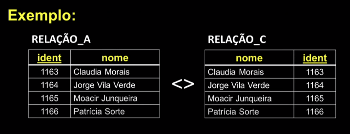
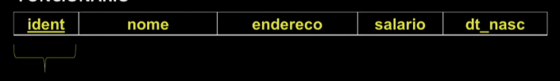
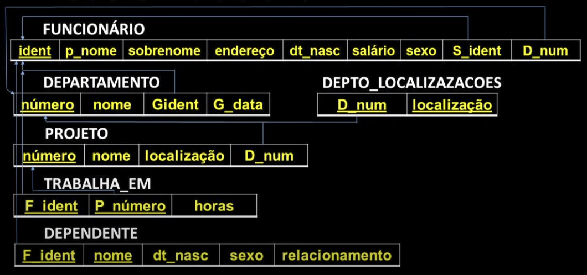

Disciplinas
-
BANCO DE DADOS-T01-2024-1 Concluído
Materiais
Vídeo 1 - Bancos de Dados - Aula 05 – Modelo Relacional (R) – características, formalização e restrições. sendProfessor ministrante: Sarajane Peres.
Conteúdo
Modelo Relacional (R) – características, formalização e restrições.
Modelo Relacional:
Modelo de dados que representa um banco de dados como uma coleção de relações. Uma relação remete a uma tabela de valores, na qual cada linha representa uma coleção de valores (colunas) relacionados.
Uma linha representa um fato que tipicamente corresponde a uma entidade ou relacionamento do mundo real.
Glossário para o modelo relacional.
- relação 🡺 tabela.
- tupla 🡺 linha.
- atributo 🡺 coluna.
- domínio 🡺 tipo de dado.
- Um esquema de relação R(A1, A2 An) é composto de uma 2 relação de nome R e da lista de atributos A1, A2, ..., An.
- Cada atributo A, é o nome do papel desempenhado por um domínio D no esquema de relação R.
- O grau de uma relação é o número n de atributos do esquema de relação que a define.
FUNCIONÁRIO (ident: longint; nome: string; endereço: string; salário: real; dt_nasc: date)
O relação FUNCIONÁRIO tem grau 5.
Conceitos:- Uma relação (ou estado de uma relação) r, definida sob o esquema R(A1, A2, ..., An), é um conjunto de m-tuplas r = {t₁, t2, ..., tm}.
- Cada m-tupla é uma lista ordenada de n valores t = (V1, V2, ..., Vn).
- O jésimo valor da tupla t, o qual corresponde ao atributo A₁, é referenciado como t[A] ou t.A₁.
Ordenação de tuplas em uma relação.
Uma relação é definida como um conjunto de tuplas. Elementos de um conjunto não são ordenados. Assim, as tuplas em uma relação não possuem nenhuma ordenação.
Exemplo: Ordenação dos valores dentro de uma tupla.Uma tupla é uma lista ordenada de valores, então a ordem dos valores na tupla é importante.
Para efeitos práticos, e em determinadas situações, essa restrição pode ser flexibilizada.
 Valores e NULL nas tuplas:Cada valor em uma tupla é um valor atômico. Assim, atributos compostos e atributos multivalorados não são permitidos.
Valores NULL são usados para representar os valores desconhecidos ou que não se aplicam àquele atributo naquela tupla.
Restrições de domínio:Restrições de domínio especificam que o valor de cada atributo A deve ser um valor atômico dentro de um domínio dom(A), em todas as tuplas da relação.
Restrições de chave:Por definição, todos os elementos de um conjunto são distintos; logo, todas as tuplas em uma relação devem ser distintas, ou seja, duas tuplas quaisquer não podem ter a mesma combinação de valores para todos os seus atributos.
t₁[SK] <> t2[SK]
Superchave:
Qualquer conjunto de atributos SK. Toda relação tem pelo menos uma superchave – todos os seus atributos. Uma superchave pode ter atributos redundantes.
FUNCIONÁRIO:
Chave:É uma superchave de R sem atributos redundantes; i.e. é um conjunto de atributos mínimo capaz de garantir a restrição de unicidade.
FUNCIONÁRIO:
Conceitos de chave:
- Em geral, um esquema R pode ter mais de uma chave.
- Cada uma delas é uma chave candidata.
- É comum escolher uma das chaves candidatas para ser a chave primária da relação.
- Cada uma das demais chaves candidatas é chamada de chave única.
Restrição de integridade de entidade: o valor de uma chave primária não pode ser NULL.
- Restrição de integridade referencial: é específicada entre duas relações e usada para manter a consistência entre as suas tuplas.
- Uma tupla de uma relação A que referencia uma relação B deve fazer a referência a uma tupla existente na relação B.
- Considere dois esquemas de relação R₁ e R2. Um conjunto de atributos FK no esquema R₁ é uma chave estrangeira de R₁ que referencia R₂ se:
- os atributos em FK tem o mesmo domínio dos atributos da chave primária PK em R2;
- o valor de FK na tupla t₁ de um estado de r₁(R₁) ou ocorre como um valor de PK para alguma tupla t₂ de um estado de r₂(R2) ou é NULL.
t₁[FK] = t2[PK]
Modelo Relacional:

Estes slides estão baseados na bibliografia:
Modelo Entidade-Relacionamento (MER) Parte I: entidades, atributos, chaves.